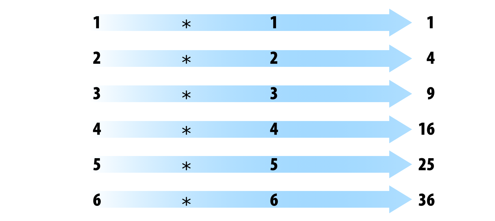
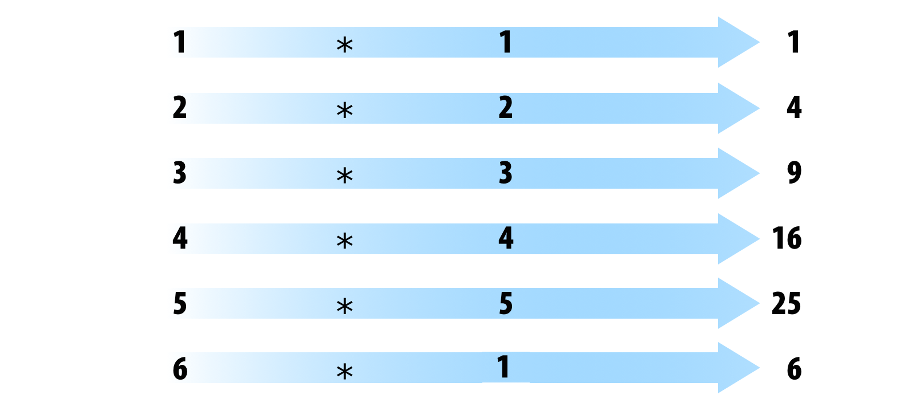
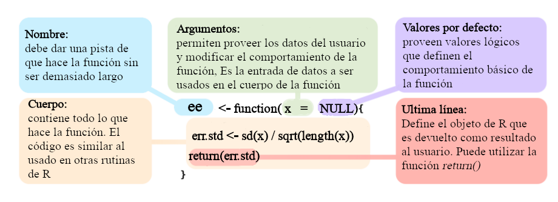
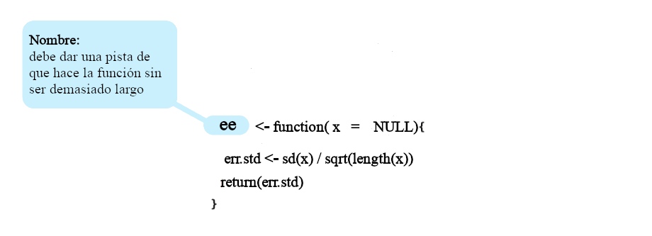
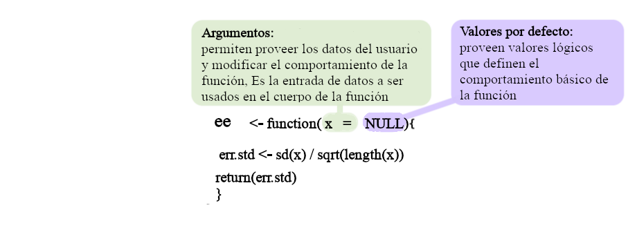
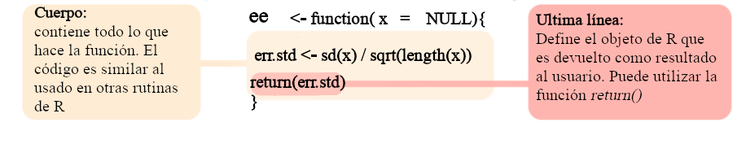

[1] 1407Funciones
Objetivo del manual
Identificar los elementos básicos que componen una función
Comprender las características de los principales tipos de argumentos en las funciones
Ser capaz de construir funciones propias
1 Funciones en R
Todo lo que sucede en
Res una llamada de una función (i.e. las manipulaciones y cálculos de objetos enRse realizan a través de una función)Una función es una subrutina que tiene como objetivo realizar una tarea específica
Permite a los usuarios juntar bloques de código que se usan con frecuencia y, por lo tanto, resulta conveniente encapsular en un objeto que se puede llamar fácilmente cuando sea necesario
Las funciones cargadas desde los paquetes (incluido
Rbásico) también se pueden modificar y sobrescribir
2 Tipos de funciones
2.1 Funciones integradas
2.1.1 Funciones básicas
R viene con muchas funciones que puedes usar para hacer tareas sofisticadas:
Algunas funciones vienen de forma predeterminada con R básico. Nuevas funciones pueden ser cargadas como parte de paquetes adicionales o incluso creadas por el usuario.
flowchart LR
classDef largeText font-size:18px, padding:15px;
F(Funciones) --> BF(Funciones Integradas)
BF --> OP(Operadores)
BF --> BA(Funciones Básicas)
F --> PF(Paquetes)
F --> UF(Funciones Definidas por el Usuario)
class R,D,D1,D2,F largeText;
style F fill:#357BA266, stroke:#000, stroke-width:2px, color:#FFF, width:120px
style BF fill:#A0DFB966, stroke:#000, stroke-width:2px, color:#000
style BA fill:#DEF5E566, stroke:#000, stroke-width:2px, color:#000
style OP fill:#DEF5E566, stroke:#000, stroke-width:2px, color:#000
style PF fill:#A0DFB966, stroke:#000, stroke-width:2px, color:#000000
style UF fill:#A0DFB966, stroke:#000, stroke-width:2px, color:#000
2.1.2 Uso de funciones
Para usar (o “llamar”) una función en R se escribe su nombre seguido de paréntesis. Dentro de los paréntesis se colocan los argumentos que la función necesita para hacer su trabajo:
nombre_funcion(argumento1, argumento2, ...)Por ejemplo, la función sqrt() calcula la raíz cuadrada de un número:
La función round() redondea un número decimal a una cantidad determinada de dígitos:
Muchas funciones pueden tomar más de un argumento y también aceptan vectores como entrada (recuerde que R está vectorizado):
[1] 55[1] 18[1] "Hola mundo"No siempre es necesario escribir el nombre de cada argumento al llamar una función; muchas veces basta con el orden en que se escriben (“coincidencia por posición”). Este y otros detalles sobre los argumentos se explican con más detalle en la sección de Argumentos más adelante en este manual. Por ahora basta con saber que la mayoría de las funciones que usaremos ya vienen definidas en R y solo es necesario llamarlas con los valores adecuados.
2.1.3 Obtener ayuda sobre una función
Casi todas las funciones de R (incluidas las de paquetes) tienen documentación integrada. Para consultarla se usa ? seguido del nombre de la función, o la función help():
En Rstudio también podemos presionar F1 cuando el cursos está sobre el nombre de la función para acceder a su docmentación.
La ayuda muestra, entre otras cosas, qué argumentos acepta la función, cuáles tienen valores predeterminados y ejemplos de uso, algo que exploraremos con más detalle en las próximas secciones.
2.1.4 Operadores
Los operadores son funciones:
2.1.4.1 Operadores mas utilizados
Operadores aritméticos:
| Operador | Descrición |
|---|---|
| + | suma |
| - | resta |
| * | multiplicación |
| / | división |
| ^ or ** | exponente |
Operadores lógicos:
| Operador | Descrición |
|---|---|
| < | menor que |
| <= | menor o igual que |
| > | mayor que |
| >= | mayor o igual que |
| == | exactamente igual que |
| != | diferente que |
| !x | No es x |
| x | y | x O y |
| x & y | x Y y |
| x %in% y | correspondencia |
[1] TRUE[1] FALSE[1] TRUE[1] FALSE[1] TRUE[1] FALSE[1] TRUE[1] FALSELos paréntesis utilizados para extraer subconjuntos de objetos también son funciones:
2.1.5 Vectorización
La mayoría de las funciones están vectorizadas:

* Modified from Grolemund & Wickham 2017
[1] 1 4 9 16 25 36R recicla vectores de longitud desigual:

* Modified from Grolemund & Wickham 2017
2.1.6 Funciones de paquetes adicionales
Estas son funciones que son incluidas en paquetes adicionales que se pueden instalar y cargar en R. Para ser utilizadas el paquete debe ser instalado y cargado. Por ejemplo, para usar la función viridis() del paquete “viridis” primero debemos instalarlo. Los paquetes son instalados del servidor de CRAN (Comprehensive R Archive Network) con la función install.packages():
.. y cargar el paquete:
Una vez instalado y cargado ‘viridis’, podemos llamar a la función viridis() para generar una paleta de colores:
Esta función es particularmente útil porque genera paletas de colores perceptualmente uniformes y aptas para personas con daltonismo, algo muy recomendable al graficar datos científicos. Por ejemplo, podemos usarla para colorear las barras de un gráfico:
El uso de paquetes externos es la caracteristica mas util de R ya que permite hacer uso de un número casi infinito de funciones especializadas en diferentes tareas así como de campos muy diversos de la ciencia y la industria.
Podemos explorar los paquetes disponibles para R en la página de CRAN (hacer click en el enlace “packages”).
2.1.7 Ejercicio 1
1.1 Busque un paquete que le interese en CRAN
1.2 Instale el paquete y cárguelo
1.3 Corra el código de ejemplo de una de sus funciones
3 Estructura básica
Todas las funciones son creadas iguales … mediante la función function() y siguen la misma estructura:

* Modificado de Wickham et al. 2016
Podemos observar la estructura de funciones ya cargadas en nuestro entorno de R. Para ver el código simplemente corra al nombre de la función en R (sin el paréntesis). Por ejemplo, el código de la función sd() se puede mostrar de la siguiente manera:
function (x, na.rm = FALSE)
sqrt(var(if (is.vector(x) || is.factor(x)) x else as.double(x),
na.rm = na.rm))
<bytecode: 0x58f347a7a7d8>
<environment: namespace:stats>En Rstudio, el código también se puede mostrar usando F2 cuando el cursor está en el nombre de la función.
Además, podemos diseccionar las funciones en sus elementos básicos:
sqrt(var(if (is.vector(x) || is.factor(x)) x else as.double(x),
na.rm = na.rm))$x
$na.rm
[1] FALSE<environment: namespace:stats>
Algunas funciones R utilizan funciones primitivas (principalmente escritas en C). En estos casos, el código no se muestra:
function (..., na.rm = FALSE) .Primitive("sum")NULLNULLNULL
Las funciones son en sí mismas un tipo específico de objeto:
3.1 Nombre

Los nombres de las funciones tienen pocas restricciones. Siguen las mismas reglas que otros objetos en R. Algunas recomendaciones/reglas:
No utilice nombres de objetos comunes
R(por ejemplo,iris,x) u objetos que ya están en el entornoNo use nombres de funciones de uso frecuente (por ejemplo,
mean)No puede comenzar con un número
Debería sugerir lo que hace
No debe ser muy largo
En caso de que tenga varias funciones con el mismo nombre, puede llamarlas individualmente utilizando el nombre del paquete (o namespace) seguido de :::
[1] 1 1024 59049 1048576 9765625[1] 1.5811[1] 1.5811
La sintaxis namespace::function también se puede usar para llamar a funciones desde paquetes que se han instalado pero que no están cargados en el entorno actual.
Las funciones pueden ser anónimas:
Esto es más útil cuando se usan las funciones Xapply:
[[1]]
[1] 1 1024 59049 1048576 9765625
[[2]]
[1] 1 1024 59049 1048576
[[3]]
[1] 1 1024 590493.2 Argumentos

Permiten a los usuarios ingresar objetos en la función. Los valores proporcionados en los argumentos son utilizados en el cuerpo de la función para hacer los cálculos necesarios.
flowchart LR
classDef largeText font-size:18px, padding:15px;
A(Argumentos) --> B(Tarea)
subgraph Cuerpo
B --> C("Enunciado de retorno\nreturn()")
end
C --> D(Resultado)
style A fill:#38AAAC80, stroke:#000, stroke-width:2px, color:#FFF
style B fill:#BEBEBE1A, stroke:#000, stroke-width:0.5px, color:#FFF
style C fill:#BEBEBE1A, stroke:#000, stroke-width:0.5px, color:#FFF
style D fill:#BEBEBE1A, stroke:#000, stroke-width:0.5px, color:#FFF
style Cuerpo fill:#BEBEBE1A
Los argumentos pueden o no tener valores predeterminados. Cuando los argumentos tienen valores predeterminados, no es necesario proporcionarlos:
Por supuesto, se pueden modificar:
Los argumentos sin valor predeterminado deben ser proporcionados:
Si todos los argumentos tienen un valor predeterminado, se puede invocar la función sin proporcionar ningún argumento:
Ese es el caso de dev.off() y Sys.time():
Los argumentos pueden especificarse implícitamente por posición o por nombres incompletos:
Código
List of 3
$ a1: num 1
$ b1: num 2
$ b2: num 3List of 3
$ a1: num 1
$ b1: num 2
$ b2: num 3List of 3
$ a1: num 2
$ b1: num 1
$ b2: num 3List of 3
$ a1: num 3
$ b1: num 1
$ b2: num 2List of 3
$ a1: num 2
$ b1: num 3
$ b2: num 1
Sin embargo, esto no funciona si los nombres son ambiguos:
Es más seguro (y, por lo tanto, una mejor práctica) usar los nombres completos de los argumentos.
Las funciones también pueden tomar argumentos lógicos. Estos son útiles para modificar el comportamiento de la función para que coincida con diferentes escenarios. Por ejemplo, mean() permite a los usuarios ignorar los NA:
[1] NA[1] 2
3.3 Ejercicio 2
2.1 ¿Qué hace la función cor.test()?
2.2 Úsela con “Sepal.Length” y “Sepal.Width” de los datos de ejemplo iris (use data(iris))
2.3 ¿Qué argumentos deben proporcionarse?
2.4 ¿Qué hace el argumento alternative? Use diferentes valores para este argumento y compare los resultados
2.5 ¿Cómo se puede calcular la correlación de Spearman?
2.6 ¿Cómo puede obtener el valor de p directamente del resultado de la función (sin guardar el resultado como un objeto)?
2.7 Escoga una función de R y lea su documentación con el fin de entender su uso, cada uno de sus argumentos (y que tipo de objetos requieren) y el resultado que produce (es probable que se le pida que explique esto al grupo)
3.4 Cuerpo

El cuerpo de una función puede contener:
Comprobación de argumentos
Manipulación de datos
Definición de resultados
El cuerpo de la función puede tomar el mismo tipo de código utilizado en cualquier rutina de R. Sin embargo, los objetos creados no estarán disponibles en el entorno.
flowchart LR
classDef largeText font-size:18px, padding:15px;
A(Argumentos) --> B(Tarea)
subgraph Cuerpo
B --> C("Enunciado de retorno\nreturn()")
end
C --> D(Resultado)
style A fill:#A0DFB980, stroke:#000, stroke-width:0.5px
style B fill:#38AAAC80, stroke:#000, stroke-width:2px
style C fill:#38AAAC80, stroke:#000, stroke-width:2px
style D fill:#BEBEBE1A, stroke:#000, stroke-width:0.5px
style Cuerpo fill:#DEF5E54D
Cuando se realizan varios cálculos, debemos incluir una declaración de retorno (return statement), que define explícitamente la salida de la función. Esto se hace usando la función return():
Código
[1] 1.6667Código
[1] 4.0 5.0 6.0 0.5[1] 4.0 5.0 6.0 0.5
Por lo tanto, cuando no se proporciona una declaración de retorno, la función devolverá el último objeto que se creó en el cuerpo de la función:
Código
[1] 4.0 5.0 6.0 0.5[1] 4.0 5.0 6.0 0.5
Es más seguro usar return().
Cuando una función realiza varias tareas, podemos usar una lista para juntar los diferentes objetos. Esto es particularmente útil cuando se generan objetos de diferentes clases (por ejemplo, vectores y listas):
Código
[[1]]
[1] 15
[[2]]
[1] 10.0000 1.6667
[[3]]
[1] FALSE TRUE
Podemos guardar el resultado como un objeto y acceder a cada elemento mediante la indexación:
[1] 15[1] 10.0000 1.6667
3.5 Ejercicio 3
3.1 Cree una función llamada promedio que calcule el promedio de un vector numérico. Internamente solo puede utilizar las funciones sum() y length() (suma y división, no puede llamar la función mean())
3.2 Cree una función que tome 2 argumentos numéricos (llámelos ‘x’ y ‘y’), eleve cada uno al cuadrado y luego los sume
3.3 Agregue valores predeterminados a cada argumento
3.4 Ejecute la función usando los valores predeterminados
3.5 Ejecute la función usando un valor predeterminado y uno proporcionado
3.6 Ejecute la función proporcionando ambos valores
4 Argumentos lógicos
Son argumentos que pueden tomar solo dos valores: TRUE o FALSE. Estos argumentos permiten modificar el comportamiento de la función de forma binaria: si es TRUE llevaría a cabo la tarea 1 y si es FALSE llevaría a cabo la tarea 2. Internamente (i.e. en el cuerpo de las función) estas funciones implican el uso del operador if, algunas veces incluyendo su contra-parte else. Estos operadores son parte fundamental de la programación y se usan para definir que acción ejecutar con base en una evaluación lógica:
Código
[1] "se ejecuta la accion 1"Código
[1] "se ejecuta la accion 1"Código
[1] "se ejecuta la accion 2"
La parte dentro de los paréntesis justo después de if es la evaluación lógica.
Estos operadores son utilizados en el cuerpo de la función cuando esta lleva un argumento lógico.
flowchart LR
classDef largeText font-size:18px, padding:15px;
A(Argumento lógico) --> B(Evaluación)
subgraph Cuerpo
B -- verdadero --> C(Tarea 1)
B -- falso --> D(Tarea 2)
C --> E("Enunciado de retorno\nreturn()")
D --> E
end
E --> F(Resultado)
style A fill:#A0DFB980, stroke:#000, stroke-width:2px
style B fill:#38AAAC80, stroke:#000, stroke-width:2px
style C fill:#38AAAC80, stroke:#000, stroke-width:2px
style D fill:#40498E80, stroke:#000, stroke-width:2px
style E fill:#40498E4D, stroke:#000, stroke-width:2px
style F fill:#BEBEBE1A, stroke:#000, stroke-width:0.5px
style Cuerpo fill:#DEF5E54D
Por ejemplo, la siguiente función utiliza un argumento lógico para decidir si la operación algebraica a realizar es una suma o un promedio:
Note que este tipo de argumentos deben tener un valor predeterminado. Podemos probar la función de la siguiente forma:
4.1 Ejercicio 4
4.1 Cree una función que tome 3 argumentos numéricos, multiplíquelos y luego calcule el logaritmo natural del resultado (función log())
4.2 Agregue valores predeterminados a cada argumento
4.3 Ejecute la función con uno de los argumentos con un número negativo. ¿Qué pasa? ¿Por qué?
4.4 Agregue un argumento lógico que permita a los usuarios (si lo desean) convertir los argumentos de entrada a su valor absoluto (usando la función abs()). Agregue las modificaciones necesarias para que la función haga los cálculos con y sin valores absolutos.
5 Ventajas de usar funciones
5.1 Código mas limpio
Los objetos creados dentro del cuerpo no están disponibles en el entorno actual:
Código
[1] 3.8918[1] FALSE[1] FALSE
[1] TRUE[1] TRUE
5.2 Facil de correr y compartir
Se pueden invocar funciones desde archivos de R externos sin estar definidas en el código actual con la función source(). En este ejemplo creamos la función fnctn_X:
Código
[[1]]
[,1] [,2]
[1,] 1 2
[2,] 3 4
[[2]]
[1] 4 9
Guarde el código anterior en un archivo R llamado ‘function_X.R’. Ahora la función se puede cargar usando source():
[[1]]
[,1] [,2]
[1,] 1 2
[2,] 3 4
[[2]]
[1] 4 9
Además, este código se puede compartir fácilmente. Se puede enviar por correo electrónico o publicar en línea. Incluso se puede cargar desde repositorios en línea:
[1] FALSECódigo
[1] TRUE
5.3 Se aplica fácilmente a nuevos objetos
Esto ya debería ser obvio a este punto.
5.4 Otros consejos
- Construir funciones cortas:
- Fácil de leer
- Fácil de arreglar y actualizar
- Si es demasiado largo, probablemente debería dividirse en varias funciones
- Genera modularidad
- Añadir comentarios a todo el código
- Agregar descripciones a cada uno de los argumentos que toma
- Función de prueba con diferentes valores/escenarios
5.5 Ejercicio 5
5.1 Cree una función que tome un único argumento (x) y con este calcule el promedio, la desviación estándar y el error estándar. Estos valores deben ser devueltos como un cuadro de datos (data frame) con cada valor en una columna con su respectivo nombre (pista: no existe función predeterminada para error estandar).
5.2 Modifique la función del punto anterior para que permita a los usuarios ignorar los NAs (similar al argumento na.rm en mean(), pista: añada un argumento lógico, puede utilizar la funcion na.omit() en el cuerpo de la función)
5.3 La función shapiro.test() permite ejecutar la prueba de normalidad de Shapiro-Wilk, la cual evalua si un vector numérico está normalmente distribuido. Añada una columna al resultado de la función de los puntos anteriores que incluya el valor de p estimado por shapiro.test() sobre el vector del argumento x.
5.2 Modifique la función de los puntos anteriores para que revise si el argumento x es numérico. Si no lo es, haga que la función pare usando stop() inmediatamente despues de la revisión. Puede incluir un mensaje de error dentro de stop() (e.g. stop("x no es numérico")).
5.6 Lecturas adicionales
Introduction to R guide to writing functions with information for a total beginner
Information on functions for intermediate and advanced users (Hadley Wickham).
The official R intro material on writing your own functions (ir a “Writing your own function”)
5.7 Referencias
- Wickham, Hadley, and Garrett Grolemund. 2016. R for data science: import, tidy, transform, visualize, and model data. website
Información de la sesión
─ Session info ───────────────────────────────────────────────────────────────
setting value
version R version 4.6.1 (2026-06-24)
os Ubuntu 22.04.5 LTS
system x86_64, linux-gnu
ui X11
language (EN)
collate en_US.UTF-8
ctype en_US.UTF-8
tz America/Costa_Rica
date 2026-09-27
pandoc 3.8.3 @ /usr/lib/rstudio/resources/app/bin/quarto/bin/tools/x86_64/ (via rmarkdown)
quarto 1.7.31 @ /usr/local/bin/quarto
─ Packages ───────────────────────────────────────────────────────────────────
package * version date (UTC) lib source
cachem 1.1.0 2024-05-16 [2] CRAN (R 4.6.1)
cli 3.6.6 2026-04-09 [2] CRAN (R 4.6.1)
devtools 2.5.2 2026-04-30 [2] CRAN (R 4.6.1)
digest 0.6.39 2025-11-19 [2] CRAN (R 4.6.1)
dplyr 1.2.1 2026-04-03 [2] CRAN (R 4.6.1)
ellipsis 0.3.3 2026-04-04 [2] CRAN (R 4.6.1)
evaluate 1.0.5 2025-08-27 [2] CRAN (R 4.6.1)
farver 2.1.2 2024-05-13 [2] CRAN (R 4.6.1)
fastmap 1.2.0 2024-05-15 [2] CRAN (R 4.6.1)
fs 2.1.0 2026-04-18 [2] CRAN (R 4.6.1)
generics 0.1.4 2025-05-09 [2] CRAN (R 4.6.1)
ggplot2 4.0.3 2026-04-22 [2] CRAN (R 4.6.1)
glue 1.8.1 2026-04-17 [2] CRAN (R 4.6.1)
gridExtra 2.3.1 2026-06-25 [2] CRAN (R 4.6.1)
gtable 0.3.6 2024-10-25 [2] CRAN (R 4.6.1)
htmltools 0.5.9 2025-12-04 [2] CRAN (R 4.6.1)
htmlwidgets 1.6.4 2023-12-06 [2] CRAN (R 4.6.1)
jsonlite 2.0.0 2025-03-27 [2] CRAN (R 4.6.1)
kableExtra 1.4.1 2026-07-08 [2] CRAN (R 4.6.1)
knitr 1.51 2025-12-20 [2] CRAN (R 4.6.1)
lifecycle 1.0.5 2026-01-08 [2] CRAN (R 4.6.1)
magrittr 2.0.5 2026-04-04 [2] CRAN (R 4.6.1)
memoise 2.0.1 2021-11-26 [2] CRAN (R 4.6.1)
otel 0.2.0 2025-08-29 [2] CRAN (R 4.6.1)
pillar 1.11.1 2025-09-17 [2] CRAN (R 4.6.1)
pkgbuild 1.4.8 2025-05-26 [2] CRAN (R 4.6.1)
pkgconfig 2.0.3 2019-09-22 [2] CRAN (R 4.6.1)
pkgload 1.5.3 2026-06-15 [2] CRAN (R 4.6.1)
purrr 1.2.2 2026-04-10 [2] CRAN (R 4.6.1)
R6 2.6.1 2025-02-15 [2] CRAN (R 4.6.1)
RColorBrewer 1.1-3 2022-04-03 [2] CRAN (R 4.6.1)
rlang 1.3.0 2026-07-05 [2] CRAN (R 4.6.1)
rmarkdown 2.31 2026-03-26 [2] CRAN (R 4.6.1)
rstudioapi 0.19.0 2026-06-11 [2] CRAN (R 4.6.1)
S7 0.2.2 2026-04-22 [2] CRAN (R 4.6.1)
scales 1.4.0 2025-04-24 [2] CRAN (R 4.6.1)
sessioninfo 1.2.4 2026-06-04 [2] CRAN (R 4.6.1)
stringi 1.8.7 2025-03-27 [2] CRAN (R 4.6.1)
stringr 1.6.0 2025-11-04 [2] CRAN (R 4.6.1)
svglite 2.2.2 2025-10-21 [2] CRAN (R 4.6.1)
systemfonts 1.3.2 2026-03-05 [2] CRAN (R 4.6.1)
textshaping 1.0.5 2026-03-06 [2] CRAN (R 4.6.1)
tibble 3.3.1 2026-01-11 [2] CRAN (R 4.6.1)
tidyselect 1.2.1 2024-03-11 [2] CRAN (R 4.6.1)
usethis 3.2.1 2025-09-06 [2] CRAN (R 4.6.1)
vctrs 0.7.3 2026-04-11 [2] CRAN (R 4.6.1)
viridis * 0.6.5 2024-01-29 [2] CRAN (R 4.6.1)
viridisLite * 0.4.3 2026-02-04 [2] CRAN (R 4.6.1)
xfun 0.60 2026-07-09 [2] CRAN (R 4.6.1)
xml2 1.6.0 2026-06-22 [2] CRAN (R 4.6.1)
yaml 2.3.12 2025-12-10 [2] CRAN (R 4.6.1)
[1] /home/m/R/x86_64-pc-linux-gnu-library/4.6
[2] /usr/local/lib/R/site-library
[3] /usr/lib/R/site-library
[4] /usr/lib/R/library
* ── Packages attached to the search path.
──────────────────────────────────────────────────────────────────────────────